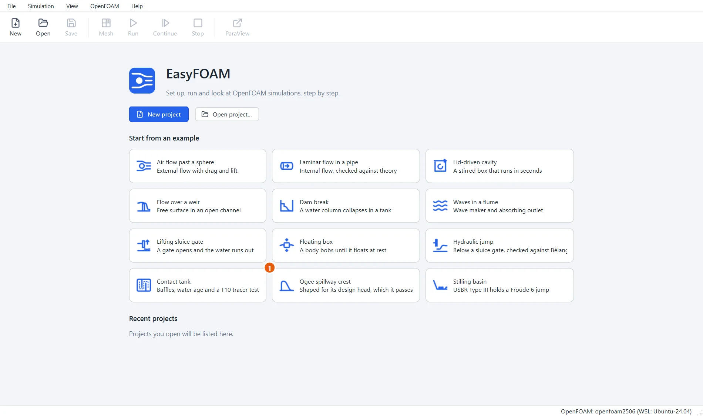
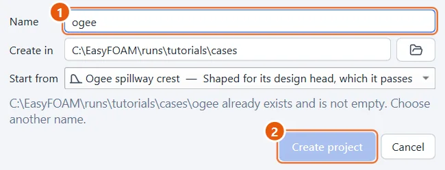
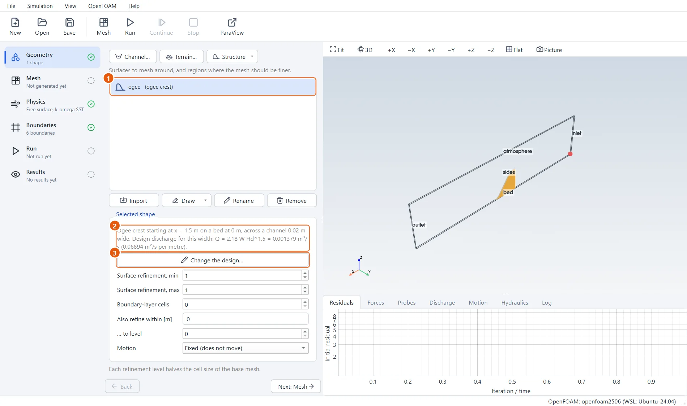
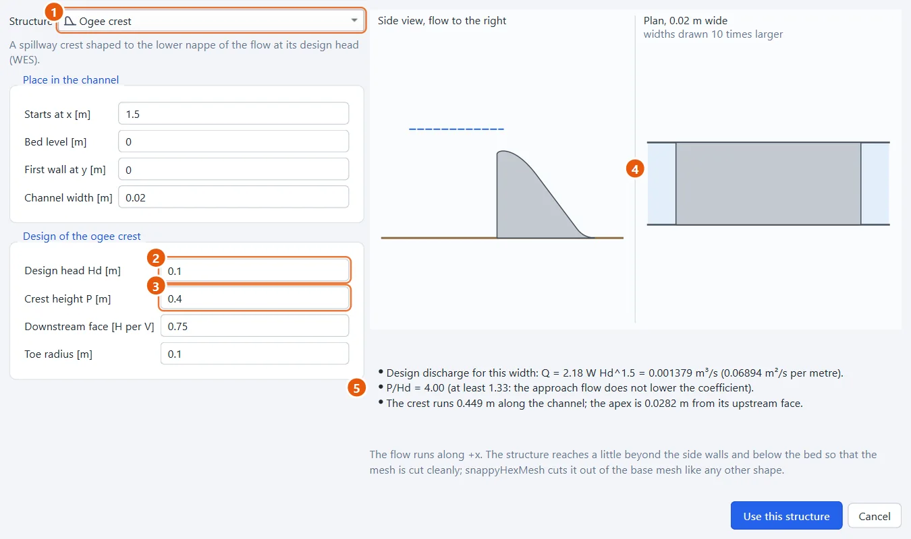
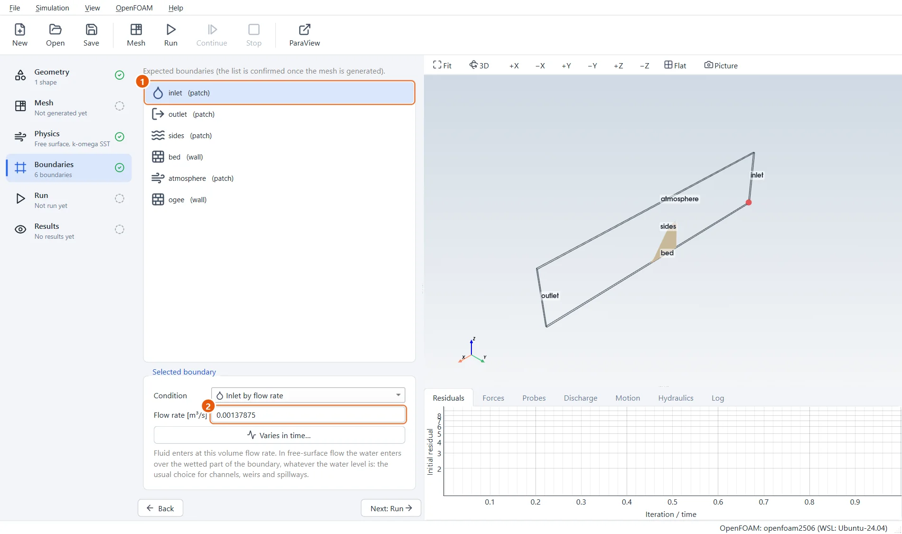
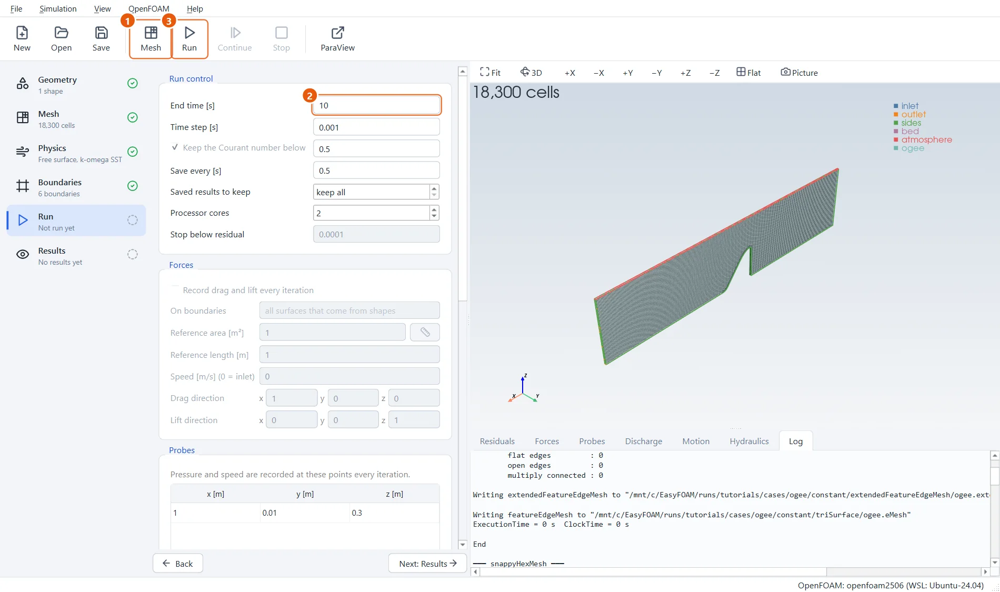
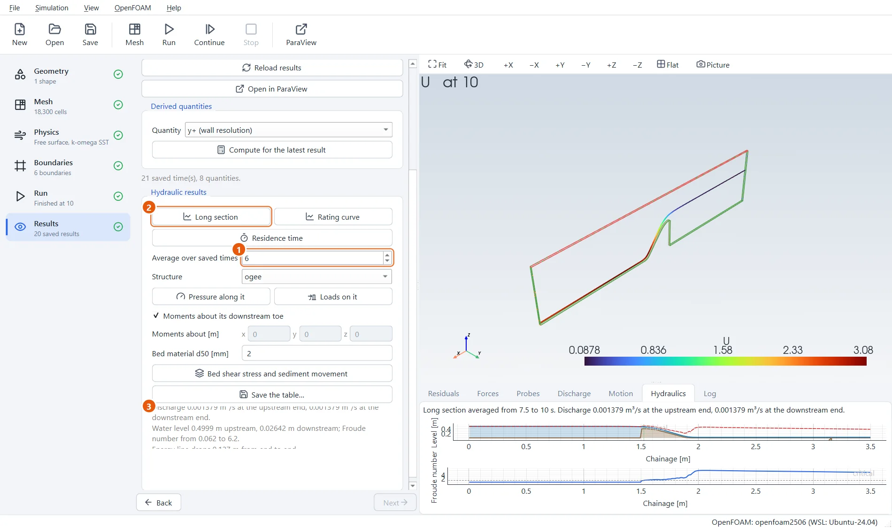
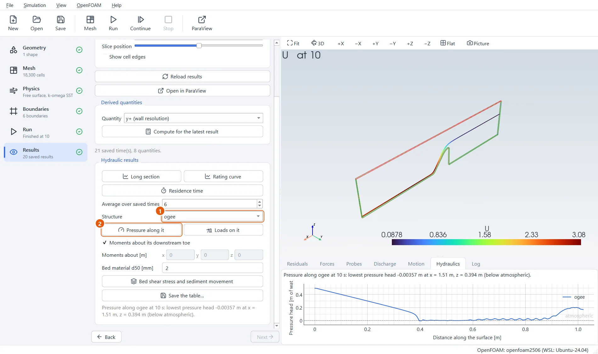

Tutorial 13 of 19
Ogee spillway crest from its design head
Make a spillway crest from its design head, let EasyFOAM give its design discharge, and check that the crest runs at that head with about atmospheric pressure on it.
An ogee crest is shaped like the underside of the sheet of water that would spring clear of a sharp crest at the design head Hd. At that head the water follows the crest closely, the pressure on it is about atmospheric, and the crest passes Q = C·W·Hd^1.5 with C close to 2.18 (in metres and seconds) when the crest stands well above the bed. The standard shape (the WES crest of the US Army Corps of Engineers) follows from Hd alone: three circular arcs upstream of the apex and the curve x^1.85 = 2 Hd^0.85 y downstream of it, down to the face of the spillway.
In this tutorial you open an example in which EasyFOAM has made such a crest from a design head of 0.1 m, look at its design, and run the design discharge over it.
What you will learn
- make a structure from its design values and see it drawn as you type
- read the design discharge EasyFOAM works out for it
- check the head over the crest with a long section
- look at the pressure along the crest
Computer time: about twenty minutes on two cores.
1Open the example
Start EasyFOAM. This case is one of the examples on the start page: it comes with every setting filled in, and this tutorial walks through each of them so that you understand the case and could build it yourself.
- Click Ogee spillway crest.


2Name the project
The project is an ordinary folder that EasyFOAM creates for you.
- Type a name, for example
ogee. - Click Create project.


3The crest
The channel is a thin slice, 2 cm wide, of a wide spillway: 3.5 m long and 0.8 m high, with frictionless sides. The crest is a structure, made from its design values; the summary under it says what it is and the discharge it is made for.
- The shape ogee, an ogee crest.
- Where it stands and its design discharge.
- Change the design… opens its design.


4Its design
The design head is 0.1 m and the crest stands 0.4 m above the bed, so P/Hd = 4: the water arrives slowly enough not to change the coefficient. Below the curve the face slopes at 0.75 horizontal to 1 vertical and turns into the bed along a curve of 0.1 m radius. The side view draws the crest with the design head as a dashed line; the lines below it give the design discharge, 1.38 litres a second through the slice (0.069 m³/s per metre).
- Structure: Ogee crest.
- Design head Hd:
0.1m. - Crest height P:
0.4m. - The crest from the side and from above.
- Its design discharge, and P/Hd.


5The design discharge
The inlet lets in exactly that discharge: 0.00137875 m³/s. The reservoir starts filled to the design head, so the run settles quickly; the outlet lets the water leave freely.
- The boundary inlet.
- Flow rate:
0.00137875m³/s, the design discharge.


6Mesh and run
The crest is cut out of the mesh by snappyHexMesh, with cells half the size along its surface. Run the ten seconds on two cores.
- Click Mesh in the toolbar (or press F5).
- End time:
10s. - Click Run in the toolbar (or press F6).


7The head over the crest
In Results, average the last 6 saved times and press Long section. Upstream of the crest the water stands 0.50 m above the bed: a head of about 0.10 m over the crest, the design head it was made for. Over the crest the water speeds up and passes critical depth, then runs down the face, fast and shallow.
- Average over:
6saved times. - Press Long section.
- Discharge and depth along the spillway.


8Pressure on the crest
Pick ogee under Structure and press Pressure along it. Up the upstream face the pressure grows with the depth of water; over the crest it falls to about zero, atmospheric, as it should at the design head. Run a larger discharge and it falls below atmospheric over the crest: the reason a crest is not run far above its design head.
- Structure:
ogee. - Press Pressure along it.

